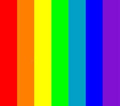

Regenboog
 Klik hier voor wikipedia
Een regenboog wordt gecreerd door de combinatie van regen en zonneschijn.
Dit is een moeilijk en natuurkundig verschijnsel.
Ik kan dit niet op een makkelijke manie uitleggen, dus voor meer informatie moet je na de wikipedia pagina van regenboog gaan.
Een leuk weetje is dat je de regboog meestal als een halve cirkel ziet, maar het is eigenlijk een hele cirkel.
Dat komt doordat je niet hoog genoeg staat.
Klik hier voor wikipedia
Een regenboog wordt gecreerd door de combinatie van regen en zonneschijn.
Dit is een moeilijk en natuurkundig verschijnsel.
Ik kan dit niet op een makkelijke manie uitleggen, dus voor meer informatie moet je na de wikipedia pagina van regenboog gaan.
Een leuk weetje is dat je de regboog meestal als een halve cirkel ziet, maar het is eigenlijk een hele cirkel.
Dat komt doordat je niet hoog genoeg staat.
De kleuren van de regenboog

Er zijn 7 kleuren in de regenboog.
Dat zijn de kleuren rood, oranje, geel, groen, blauw, indigo en violet.
Een ezelsbruggetje daarvoor is; roddelen over grote gekke broer is vals.
Dat is een leuk weetje, maar waarom hebben we voor die kleuren gekozen en niet voor roze in plaats van rood?
Hier komt een andere pagina voor het antwoord.
Elke keer dat ik het zinnetje: Alle kleuren van de regenboog zeg, moet ik denken aan DIT LIEDJE van K3.
Het is een erg vrolijk liedje en is zeker het luisteren waard.
Als dit liedje je lievelingsliedje wordt, kun je het dansje dat erbij hoort leren en meedansen.